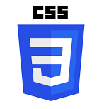
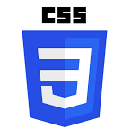

Sobre Mí
¡Hola! gracias por visitar mi portafolio, aquí encontrarás mis proyectos, mi experiencia y lo nuevo en mi proceso como desarrolladora web.
¡Hola! gracias por visitar mi portafolio, aquí encontrarás mis proyectos, mi experiencia y lo nuevo en mi proceso como desarrolladora web.
Soy una apasionada por el conocimiento y el estudio. Desde joven, he tenido intereses variados donde he podido desarrollarme en tres carreras muy diferentes. Me titulé de Secretariado, lo cual me permitió trabajar mis habilidades organizativas, luego de Pedagogía en Inglés donde aprendí a trabajar de forma colaborativa desarrollando mi pensamiento crítico y fluidez en el idioma Inglés; y actualmente soy Front-End Developer, lo cual me ha dado las herramientas para mejorar mis habilidades creativas, el autoaprendizaje y la eficiencia de proyectos.
En estos momentos me encuentro buscando mi nueva aventura laboral en el Mundo Tech.

 



Este fue mi primer proyecto web, el cual contemplaba usar funciones, parámetros, objetos y el algoritmo de Luhn. Lo que incluye la interfaz es: permitir insertar un número de tarjeta de crédito, ocultar los digitos de la tarjeta, pruebas unitarias, entre otros.
Revisalo aquíLa interfaz creada fue realizada con data externa. Aquí se puede filtrar, ordenar y contempla un cálculo agregado en donde se puede ordenar la data de acuerdo al poder que tienen los magos y personajes de la saga de Harry Potter.
Revisalo aquíCreación de Red Social enfocada en los amantes del café, en esta SPA se puede loguear, crear, editar, borrar, comentar, dar likes/dislikes e incluso subir imagenes para que acompañen los posts.
Revisalo aquíCreación de herramienta de línea de comandos (CLI) y libraría JavaScript, se ha creado además usando Node para que lea y analice archivos en formato Markdown, para así verificar que links contengan y reporten estadísticas.
Revisalo aquí